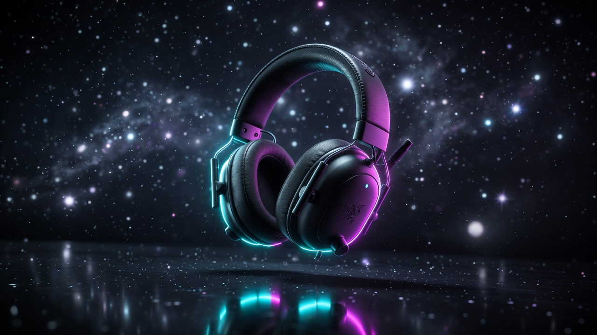

Best Gaming Headsets 2026: Top 5 Picks at Every Budget
Updated August 2026. The headset we kept recommending last spring — BlackShark V2 Pro (2023) — is no longer the default. V3 Pro took the pro-share lead after launch, Cloud II is still the stubborn CS2 wired pick, and G Pro X 2 LIGHTSPEED is the Logitech wireless that actually shows up on stage. We are not a lab; this is spec analysis, public reviews, and pro-share. Prices are approximate.
| Pick | Headset | Price | Best For |
|---|---|---|---|
| 💰 Budget | HyperX Cloud Stinger | ~$49 | First headset / casual gaming |
| ⭐ Mid-Range | SteelSeries Arctis Nova 3 | ~$99 | Wired all-rounder with great mic |
| 📡 Esports Wireless | Logitech G Pro X 2 LIGHTSPEED | ~$160 | CS2 wireless / graphene 50mm |
| 🎯 Last-gen value | Razer BlackShark V2 Pro (2023) | ~$150–$199 | Still-great, now cheaper |
| 👑 Best overall | Razer BlackShark V3 Pro | ~$250 | New pro default + ANC |
Jump to a Section
1. Best Budget Gaming Headset (~$50)

The HyperX Cloud Stinger has been a budget staple for years — and for good reason. The 50mm directional drivers punch above their price class, the swivel-to-mute mic is genuinely convenient, and the lightweight steel frame holds up to daily use. At $49 it's the easiest recommendation in gaming audio.
Pros
- Excellent value for $50
- Comfortable for long sessions
- Works on PC, PS5, Xbox, Switch
- Solid passive sound isolation
Cons
- Mic quality is basic (passable)
- No wireless option at this tier
- Minimal bass extension
2. Best Mid-Range Gaming Headset (~$100)

The Arctis Nova 3 hits the sweet spot at $100. SteelSeries' Nova drivers deliver a wide, accurate soundstage that's genuinely useful for positional audio in competitive games. The ClearCast bi-directional mic is one of the best you'll find under $150. The ski-goggle headband is oddly comfortable for hours of wear.
Pros
- Outstanding mic for the price
- Wide, accurate soundstage
- Extremely comfortable headband
- 7.1 virtual surround via Sonar app
Cons
- Wired only at this price
- Software required for EQ/surround
- Earcups can get warm
3. Best Esports Wireless (~$160)

HS80 is a fine party headset. It is not what CS2 players actually wear. G Pro X 2 LIGHTSPEED is: 50mm graphene drivers, ~50-hour claim, LIGHTSPEED plus Bluetooth (not simultaneous), Blue VO!CE mic processing, velour or leatherette pads. August 2026 CS2 tracking still has it as the top Logitech wireless. Street prices often land well under the old $250 MSRP. Skip it if you need Xbox dongle support or simultaneous BT+2.4.
Pros
- Real CS2 wireless share, not just marketing
- Comfort and pads are tournament-proven
- Often on sale near $150–$180
- Blue VO!CE is usable without a boom-arm mic
Cons
- No simultaneous 2.4 + Bluetooth mix
- No Xbox-native wireless variant in this SKU
- G HUB is still G HUB
4. Best Performance Gaming Headset (~$200)

V2 Pro (2023) is no longer the most-used Razer headset — V3 Pro took that crown — but it is the smarter buy if you already like the aviation cups and do not want to pay $250 for ANC. TriForce Titanium 50mm, dual 2.4 + Bluetooth, ~70-hour claim, ~320g. Street price now often under $180. Upgrade only if you want Gen-2 wireless, full-band mic, and hybrid ANC. V2 vs V3.
Pros
- Neutral, competitive soundstage
- Dual wireless (2.4GHz + BT)
- 70-hour battery is exceptional
- Works on every major platform
Cons
- Detachable mic not the best
- No ANC (not needed for gaming)
- Bulkier than lighter competition
5. Best Overall Gaming Headset 2026 (~$250)

V3 Pro is the headset this homepage should have been pointing at. Hybrid ANC, Gen-2 TriForce bio-cellulose 50mm, HyperClear 12mm full-band mic, HyperSpeed Wireless Gen-2 (~10 ms claim), simultaneous 2.4 GHz + Bluetooth, ~70 hours on PC. ProSettings reported it overtaking V2 Pro as the most-used headset shortly after launch. Honest caveats from independent tests: it is heavier (~367g vs ~320g), some reviewers flag treble/mic trade-offs vs V2, and $250 is $50 more. If you already own V2 Pro, stay. If you are buying new, this is the default. Nova Pro Wireless remains the hot-swap-battery / base-station alternative at ~$349.
Pros
- New most-used pro headset after launch
- ANC plus dual-wireless mix is actually useful
- Mic and connectivity jumped a generation
- Platform variants for PC / PS / Xbox
Cons
- Heavier than V2 Pro
- Some reviews prefer V2 treble/mic
- $250 vs a discounted V2 Pro
Quick Comparison: Best Gaming Headsets 2026
| Headset | Price | Connection | Battery | Platforms | Best For | Buy |
|---|---|---|---|---|---|---|
| HyperX Cloud Stinger Gen 2 | ~$49 | Wired | N/A | All | Budget Entry | Amazon → |
| SteelSeries Arctis Nova 3 | ~$99 | Wired | N/A | All | Best Value Wired | Amazon → |
| Logitech G Pro X 2 LIGHTSPEED | ~$160 | LIGHTSPEED + BT | 50hr | PC/PS5 | Esports Wireless | Amazon → |
| Razer BlackShark V2 Pro (2023) | ~$150–$199 | 2.4GHz + BT | 70hr | All | Last-gen Value | Amazon → |
| Razer BlackShark V3 Pro | ~$250 | 2.4 + BT mix | 70hr | All | Best Overall | Amazon → |
Gaming Headset Buying Guide: What Actually Matters
Wired vs Wireless
Wired headsets have zero latency and never need charging. For competitive FPS where every millisecond matters, wired is still preferred by many pros. Wireless is worth it if you play on a couch or hate cable management — modern 2.4GHz wireless has latency so low it's imperceptible in practice.
Sound Quality: What to Look For
Ignore "7.1 surround sound" marketing unless it's hardware-based (it usually isn't). What matters for gaming is a wide stereo soundstage with accurate positional audio. A neutral, flat sound profile is better for competitive play. Bass-heavy headsets sound impressive but can mask footstep frequencies.
Mic Quality
Most gaming headsets in the $50–$150 range have acceptable but not great mics. If mic quality matters (streaming, Discord, team coordination), the SteelSeries Arctis line uses the best mic tech at any given price point. Detachable boom mics are generally better than flip-up designs.
Comfort for Long Sessions
Clamp pressure, ear cup material, and headband padding all affect long-session comfort more than most people expect. Velour ear cups breathe better than pleather but provide slightly less sound isolation. If you play 4+ hour sessions regularly, prioritize comfort as highly as sound quality.
Compatibility
Most wired headsets with a 3.5mm jack work on any platform. Wireless headsets are more restricted — check if your headset supports your console. The Razer BlackShark V2 Pro is one of the few wireless headsets that supports all major platforms.
More Gaming Gear Guides
- Gaming Headset Buying Guide — Open vs Closed, Wireless, Surround Explained →
- Best Budget Gaming Headsets Under $50 (2026) →
- Best Gaming Mouse 2026 →
- Best Budget Gaming Chairs (Under $200) →
- FPS Calculator — See What Your Rig Can Handle →
Head-to-Head Comparisons
- SteelSeries Arctis Nova Pro Wireless vs Logitech G Pro X 2 →
- HyperX Cloud Stinger vs SteelSeries Arctis Nova 3 →
- Corsair HS80 vs Razer BlackShark V2 Pro →
- SteelSeries Arctis Nova Pro vs Sony Pulse 3D →
- SteelSeries Arctis Nova 7 vs HyperX Cloud Alpha Wireless →
- Corsair HS65 Wireless vs Logitech G435 — budget wireless →
- HyperX Cloud II vs SteelSeries Arctis Nova 7 →
- Best Wireless Gaming Headsets 2026 →